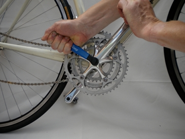

|
Replace cranks and bottom bracket |
 |
|
|
Summary
1. When to check your cranks and bottom bracket
|
Setup feels loose: It should feel absolutely solid. A
millimeter's play around the axle may indicate the bearings are worn
and need to be replaced.
Every 3-5,000 miles/3-5 years: Approximately. This
part of your bike receives some abuse from you and the elements, and
water builds-up inside the frame so it may also be prone to corrosion.
Draining the frame every year helps, but sooner or later you need to
take it apart, clean, lubricate and put it back together again.
|
|
play around axle may indicate worn bearings
|
service occasionally to avoid rust
|
drain water from frame
|
|
|
Shift chain off chainrings: Shift your chain onto
the smallest front chainring, and from there off the rings completely
until your chain rests on the frame. Mind the paintwork!
Remove crank on 'drive'/right-hand side
The 'drive-side' crank is the one with the chainrings.
- Insert crank extractor: Unscrew the dust cap and
retaining bolt at the centre of the crank arm - may need some force.
Then fully extend the crank puller by drawing back the inner
driver from within the outer sleeve. Gently screw the tool
into the crank until it stops.
- Pull off the crank: Grip the flats of the outer sleeve of the crank puller with an adjustable spanner, oriented so that you can push it anticlockwise
with your left hand. (In the figure, we are just holding the crank arm
still.) Then grip the internal driver with another spanner and
align it so that you can turn this one clockwise. (The
extractor in the figure has a handle that screws into the inner driver).
With one hand acting against the other, hold the outer sleeve
still while you turn the internal driver clockwise. You should
feel the inner driver 'bite' and begin to move the crank arm off.
Continue to turn the driver until the crank arm slides off the
spindle.
Remove the crank on the left-hand side:
Repeat the process above.
Lie the bike on its side ready to remove the bottom bracket.
|
|
Undo drive-side retaining bolt
|
Extend and screw in internal driver
|

Hold crank still and turn puller clockwise (in) til cranks come off
|
|
Buy kit?
Tools you need for this fix.
|
Ads. Selected by BikeFixer |
|
|
Buy Crank Puller
Comprehensive range of quality products
Worldwide delivery
www.wiggle.co.uk/Crank Puller
|
 |
|
|
Buy Bottom Bracket Tool
Comprehensive range of quality products
Worldwide delivery
www.wiggle.co.uk/Bottom Bracket Removal Tool
|
|
|
|
|
Find the lockring side: Bottom brackets have two
sides - a cartridge side, which gives access to the bearings unit, and a
lockring side, which keeps the bracket in place. The
lockring could be on the left, or right hand side - it depend on
the manufacturer. Either way, remove the lockring-side first.
Unscrew lockring: Insert the bottom bracket tool
into the splines of the lockring, grip it with a spanner and then
unscrew the lockring. On new Shimano bikes the lockring is on the left,
non-drive side, and you unscrew the lockring anti-clockwise
(the usual way for unscrewing). This may need some force. If it sticks
hard, ask someone to tap the bottom bracket tool with a mallet as you
attempt to turn it.
Unscrew cartridge side: Then turn bike over and use the bottom bracket tool again to remove the cartridge side - this unscrews clockwise.
|
|
insert bottom bracket tool into lockring
|
Unscrew lockring (anti-clockwise on Shimano - the usual direction)
|
Unscrew cartridge (clockwise on Shimano - reverse!)
|
|
|
Grease and identify left- and right-hand sides:
Clean and grease the thread inside the frame, on the new bottom bracket
sealed unit and the lockring. Check your new unit is
compatible. Identify the cartrdige and lockring sides -
the cartridge itself may be labelled L (Left) and R (Right) to
assist.
Screw in lockring and cartridge: Fit the lockring to the left-hand side turning clockwise, just finger tight for the time being. Then screw in the cartridge to the right hand side by turning anticlockwise.
Tighten off: Tighten the cartridge to 60lbs pressure, then tighten off the lockring with the spanner.
|
|
Screw in cartridge (Shimano anticlockwise - reverse)
|
 Screw in lockring (Shimano clockwise) Screw in lockring (Shimano clockwise) |
|
|
|
Check that cranks and spindles are free from grit and grease, and
then slide the first crank onto the spindle. Grease the sides before you
slide it on. Finally, screw in and tighten the crank bolt. Then repeat
for the crank on the other side, after checking its alignment - opposite
cranks point in opposite directions.
|
|
Slide on crank arms
|
|
|
Check new setup is absolutely firm: There should be no play around the axle, and the cranks should not wobble, or feel loose when they rotate.
Test ride: Go for a short test ride on a short road,
taking a few tools with you. If you feel anything strange, stop and
check nothing is working lose (especially the crank bolts).
|
|
About BikeFixer
BikeFixer is a co-op of bikers and web designers.
| "mc" grew up car-free in the countryside, and had to ride a bike
from an early age – absolute magic! In later life, he survived London
traffic and l’Etape du Tour. |
|
Sources
The books below are tremendously helpful, but there is a lot of material to get through.
- Ballantine, R. and Grant, R. 1994, Richards Bicycle Repair Manual. Dorling Kindersley
- Downs, T. 2005, Bicycle Maintenance & Repair
- Haynes 2007, The Bike Book - Complete Cycle Maintenance
- Park 2008, BBB-2 Big Blue Book of Bike Repair, Park Tools
- Van der Plas, R., 2007, Bicycle Repair. Repair and Maintenance of the Modern Bicycle
Sponsorship
Top10bikefixes is going for gold with Velo Club de Trabail - “Chapeau” to past, present and future members.
If they knew how to fix their bikes, they would not keep the rest of the team waiting around!
|
|